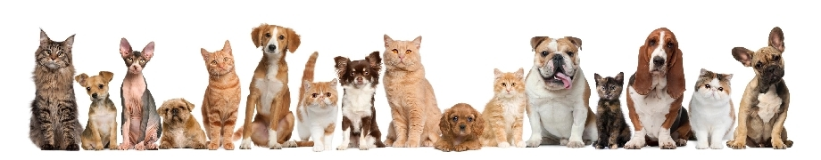

Wir möchten eine Verbindung schaffen zwischen der Veterinärmedizin und unserer Tierliebe. In unserer Praxis behandeln wir Tiere aller Art – sie alle sind bei uns in guten Händen.

Im Vordergrund stehen das Wohl des Tieres und die Zufriedenheit des Tierbesitzers.
Für eine optimale Diagnose und wirkungsvolle Behandlung: ausführliches Beratungsgespräch und sorgfältige Untersuchung – ohne Hektik.
Veterinärmedizin und Tierliebe gehören für uns zusammen – jedes Tier wird bei uns behandelt, als wäre es unser eigenes.
Von der Beratung über die Diagnostik bis zur Behandlung: Unser Praxisteam hat die Gesundheit Ihres Tieres immer im Blick.
Allgemeinuntersuchung und Behandlung von Hunden, Katzen, Kaninchen, Meerschweinchen, kleineren Nagetieren und Frettchen.
Ist Ihr Tier bereits erkrankt, kümmern wir uns um eine schnelle und möglichst schonende Behandlung. Regelmäßige Vorsorgeuntersuchungen helfen, Krankheiten im Frühstadium zu erkennen und gezielt zu bekämpfen.
Bitte beachten Sie: 30 Minuten vor Ende der Öffnungszeiten nur nach Terminvereinbarung. Alles Wichtige zum Notdienst finden Sie beim Tierärztlichen Bezirksverband Unterfranken (tbvunterfranken.de).
Sie haben noch Fragen? Wir helfen Ihnen gerne weiter – rufen Sie uns an oder schreiben Sie uns eine E-Mail.